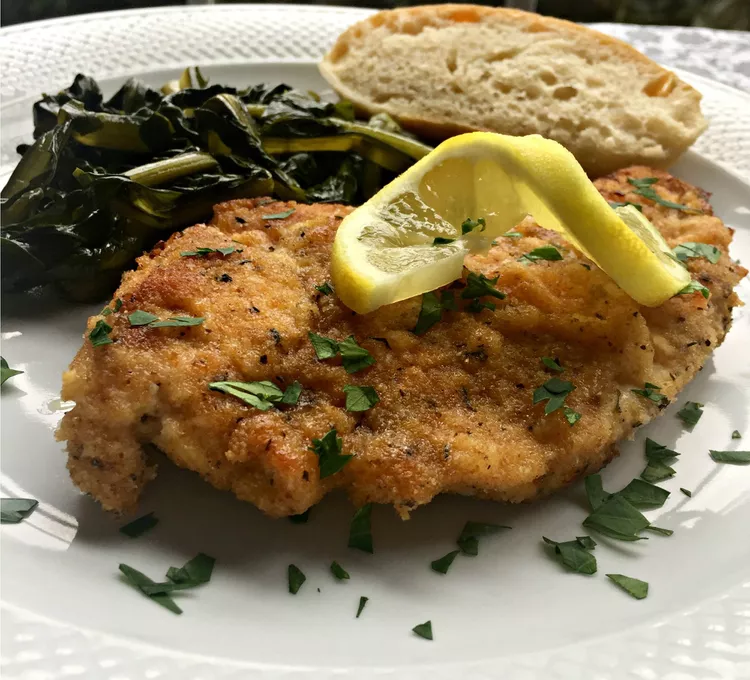

Hanukkah Chicken Recipes

Photo: thedailygourmet | size: 5kg
If potato pancakes and jelly doughnuts are already on your Hanukkah menu this year, you might be wondering how else to round out the meal. Chicken is the perfect solution. It always goes well with potatoes and even apples (applesauce is a classic topping for potato latkes).
These chicken dishes can star on your table for a company-worthy feast on the first night of Hanukkah, or a weeknight meal on the fourth or fifth night. Enjoy classics like Chicken Marsala or fried chicken, then try Israeli-style Za'atar Chicken Thighs or Greek Lemon Chicken and Potatoes. Happy Hanukkah!
Ingredients
- 1 ½ pounds ground chicken
- 3 tablespoons chopped fresh oregano
- 1 tablespoon Kalamata-olive tapenade
- 2 ounces crumbled feta cheese
- 1 ½ tablespoons crushed garlic
- ¼ teaspoon kosher salt
- ⅛ tablespoon coarse-ground black pepper
Steps
- Mix chicken, oregano, tapenade, feta cheese, and garlic together in a bowl; form into 4 patties. Season burgers with salt and pepper.
- Preheat an outdoor grill for high heat and lightly oil the grate with olive oil.
- Cook patties until charred on bottom, about 5 minutes. Flip the burgers and finish cooking, refraining from flattening with your spatula until no longer pink in the middle, about 5 minutes more. Drain on a plate lined with paper towels before serving.